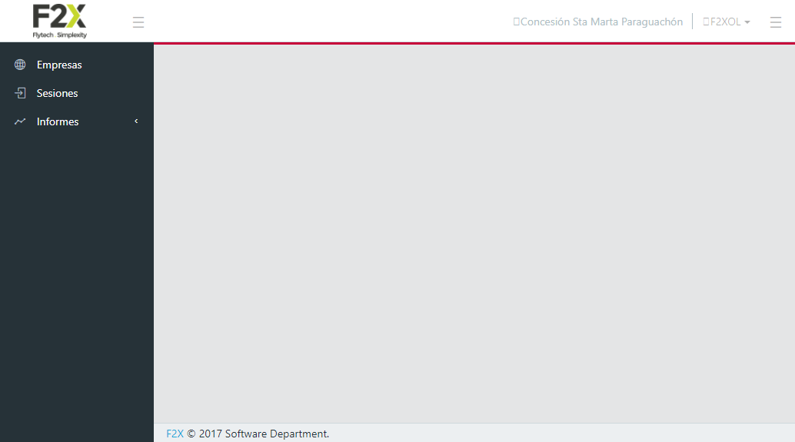

Home
>
Funcionalidades Seccion Sesiones Del Modulo De Administracion
>
Anular dos sesiones de usuario que estan marcadas
> Screenshots
Overall Test Results
Requirements
Report generated 04-02-2022 00:22
Funcionalidades Seccion Sesiones Del Modulo De Administracion
Feature
Description: Yo como usuario quiero usar ejecutar las diferentes funcionalidades de la seccion Sesiones para validar su correcto funcionamiento
Test (tag)
Anular dos sesiones de usuario que estan marcadas

SUCCESS" width="1034"/>


")
")
")


")
")

")